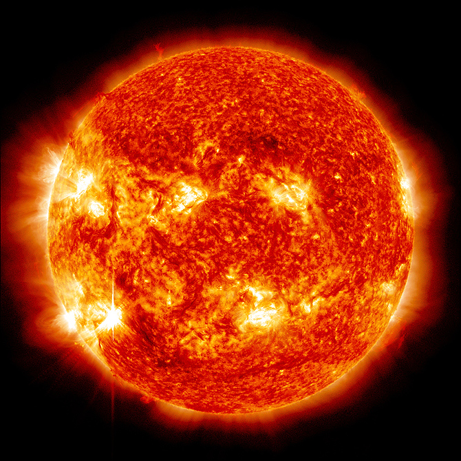

Sun

Facts
The hottest thing in the Universe. Its in the center of our solar system and it's about 4.6 billion years old. It's a yellow dwarf star and is so big , you could fit 1 million Earth's inside.
Earth
Facts
Facts about the Sun will go here.
Discovery
When this planet was found.
Named For
The meaning behind the planet's name.
Diameter
How big is the planet?
Orbit
How much time does it take to make a lap around the sun?
Day
How long are the days on this planet?
Jupiter

Facts
Jupiter is the largest planet, but spins very fast. Jupiter is also big enough to fit all the other planets inside it.
The Red Spot on Jupiter is the most violent storm in the Universe. Jupiter has 63 moons and 3 rings.
Discovery
1781 by William Hershel(was thought to be a star at first).
Named For
The King of the Roman gods.
Diameter
85,788 miles
Orbit
11.9 Earth years
Day
9 hrs, 55mins.
Mars
Facts
Mars holds the most volcanos in our solar system. Mars is also a very rocky, cold, and dusty planet. It even snows on Mars. Scientist think Mars has hope to support human life.
Discovery
.
Named For
Roman god of war.
Diameter
4,217 miles.
Orbit
687 Earth days.
Day
24hrs, 37mins.
Mercury
Facts
Many Scientist believe that Mercury was much bigger before. Its also the closet planet to the sun. Mercury has no atmosphere.
Discovery
.
Named For
Messenger of the Roman gods.
Diameter
3,031 miles.
Orbit
88 Earth days.
Day
58.6 Earth days.
Neptune
Facts
Neptune was the first planet to be predicted to exist by using math, before it was detected. Neptune is known for strong winds. Sometimes faster than the speed of sound.
Discovery
1846.
Named For
Roman god of water.
Diameter
30,775 miles
Orbit
165 Earth days
Day
19 Earth days
Pluto
Facts
Facts about the Sun will go here.
Discovery
1930 by Glybe Tomlaug.
Named For
Roman god of the underworld.
Diameter
1,430 miles.
Orbit
248 Earth years
Day
6.4 Earth days.
Saturn
Facts
Saturn is the second biggest planet, but the lightest planet. Saturn is so light it will float in the water. The rings could be pieces of a moon. Saturn also has four different seasons.
Discovery
Known to the anciens and visible.
Named For
Roman god of agriculture.
Diameter
74,900 miles.
Orbit
29.5 Earth yrs.
Day
About 10.5 Earth hrs.
Uranus
Facts
Uranus is about the same size as Neptune. Uranus is consider an oddball. Astronomers think the planet collied with some other planet of size long ago.
Discovery
1781 by William Hershel(was thought to be a star at first).
Named For
Personifiction of heaven in ancinet myth.
Diameter
31,763 miles.
Orbit
84 Earth days.
Day
18 Earth hrs.
Venus
Venus
Venus is the brightest planet in the sky. Veuns is really hot and the atmosphere is very toxic. Venus has conitinents, mountains and crater. It looks a lot like Earth.
Discovery
.
Named For
Roman goddness of love and beauty.
Diameter
7,521 miles.
Orbit
225 Earth days.
Day
241 Earth days.